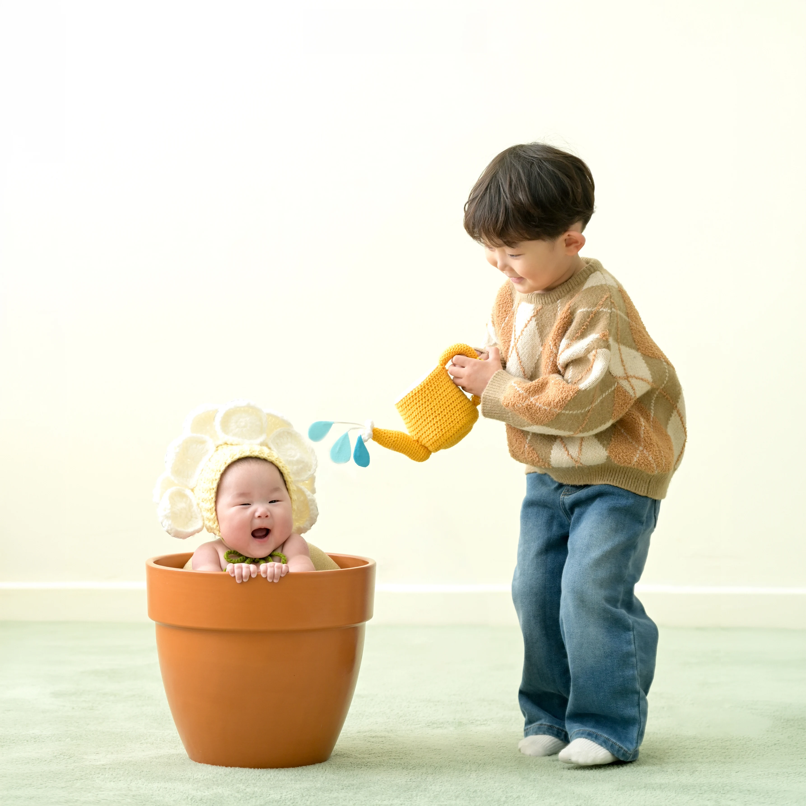
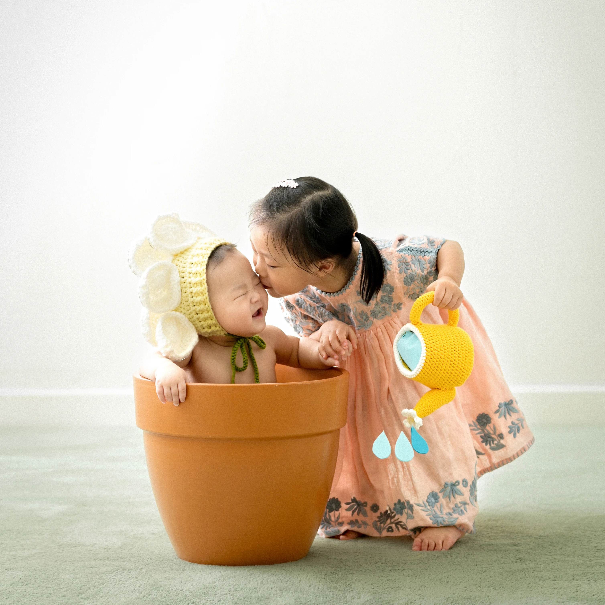
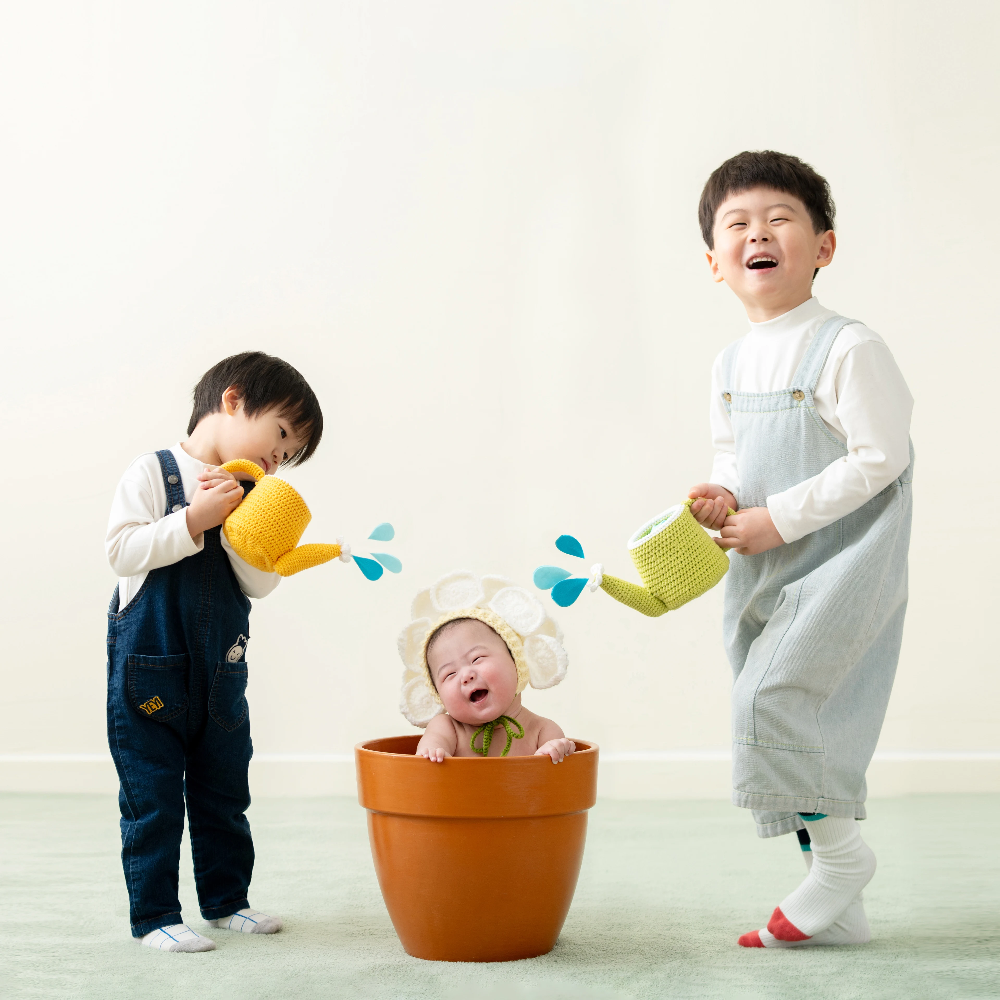
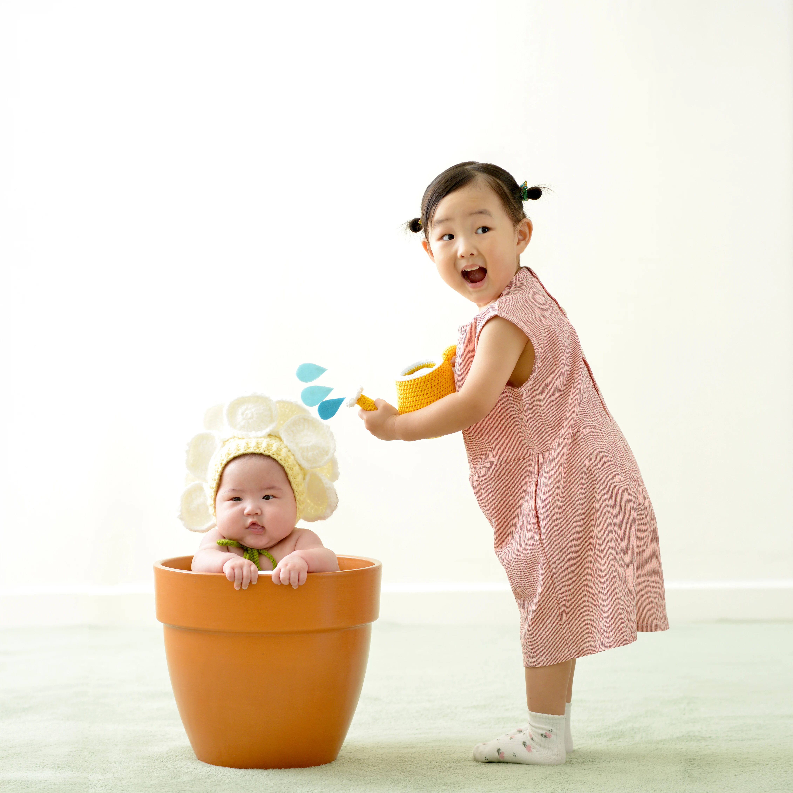
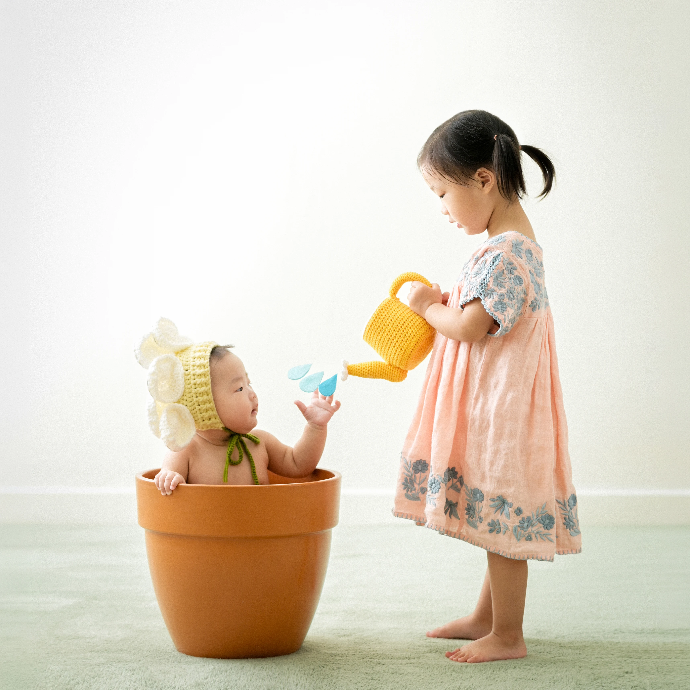
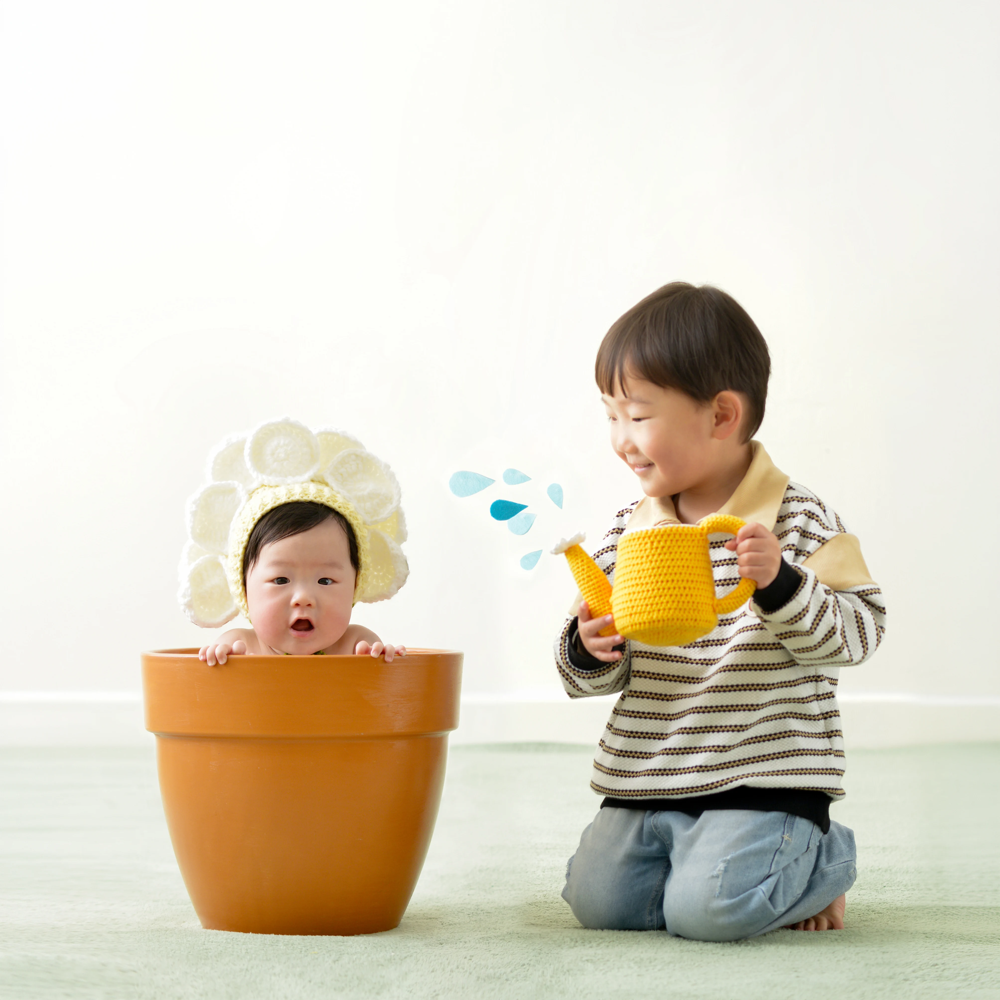
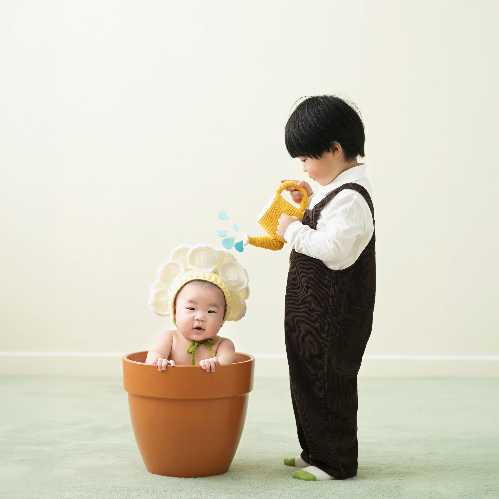
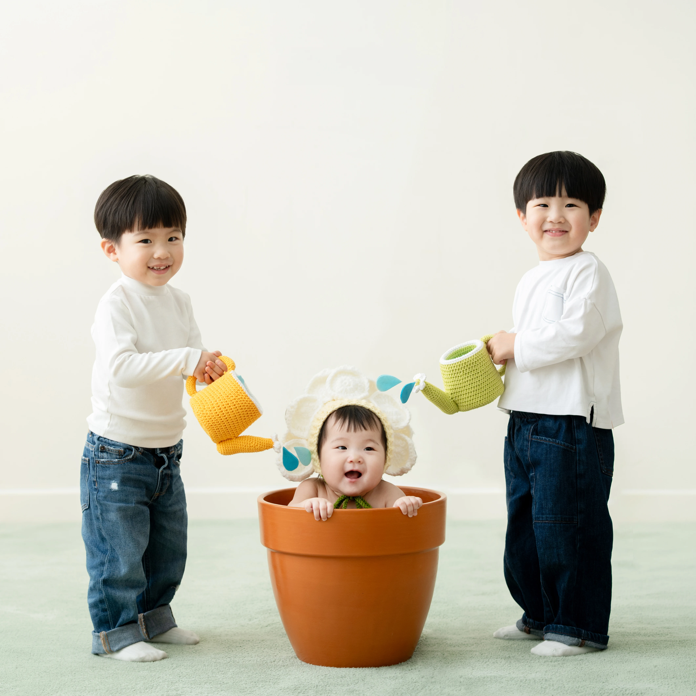

100일 꽃화분 형제 촬영
꽃화분 형제컷은 100일 형제 촬영의 어려움에서 시작된 컨셉입니다. 아직 몸을 가누기 힘든 아기와 나이 차이가 크지 않은 형제가 함께해도 안전하고 귀엽게 남길 수 있도록 만들었어요.
안전하고 귀엽게 함께
100일 아기는 아직 자세를 오래 유지하기 어렵고, 바로 위 형제도 어린 경우가 많습니다. 그래서 형제가 가까이 있어도 부담이 적고, 서로의 귀여움이 자연스럽게 보이는 구성이 필요했습니다.
기존 꽃화분 컨셉에 형제가 물을 주는 상상을 더해, 동생은 꽃처럼 쏘옥 피어나고 형제는 그 순간을 함께 돌봐주는 듯한 장면으로 완성했습니다.
이런 점이 좋아요
100일 형제 촬영에 맞춘 구성
아직 몸을 가누기 어려운 시기에도 형제와 함께 귀엽게 남기기 좋은 컨셉입니다.
뜨개 물조리개 소품
안전을 위해 물조리개를 뜨개로 제작해 부드럽고 포근한 느낌을 더했습니다.
동화 같은 물방울 포인트
톡톡 튀는 듯한 귀여운 물방울이 형제컷을 더 사랑스럽게 만들어줍니다.
꽃화분에서 피어난 형제컷
꽃화분에 물을 주는 장면은 오래전부터 상상해왔던 아이디어였습니다. 실제 물조리개 대신 부드러운 뜨개 소품을 사용하고, 물방울이 톡톡 튀는 듯한 연출을 더해 안전하면서도 동화 같은 순간으로 다듬었습니다.
컨셉 사진 더보기







꽃화분 형제컷이 마음에 든다면
아기의 시기와 형제 나이를 함께 알려주세요. 가능한 구성과 안전한 촬영 방식까지 차분히 안내해드릴게요.
문의하기